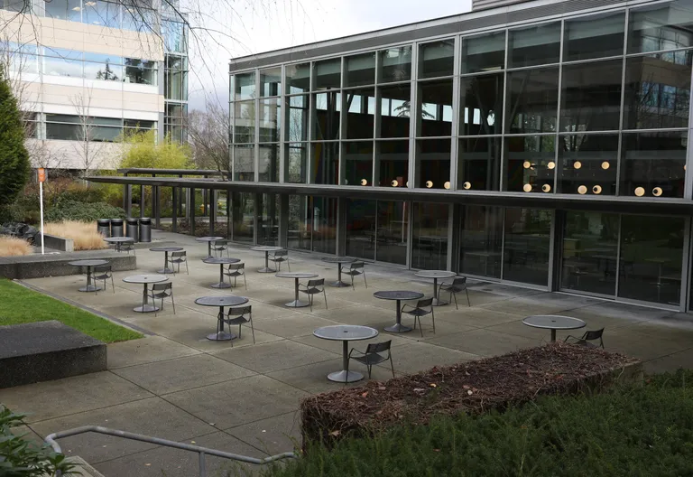
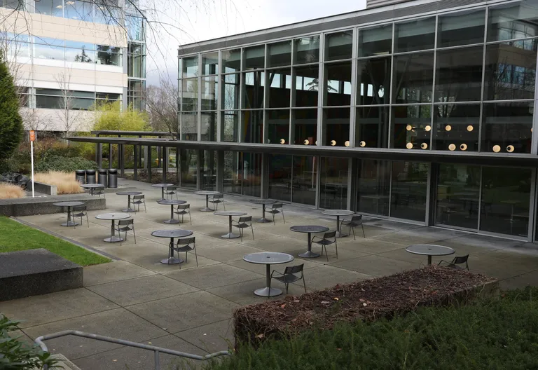

Microsoft is a company worth billions of dollars, even
with a company as busy as them the still find ways to
impact the state of washington in many different ways.
In 1995 after the release of windows 95 Microsoft
decided they needed more employees and began hiring
people, today Microsoft provides over 50,000 jobs in
the state of washington alone creating a lots of job
opportunities for people in the state. During the
Covid-19 pandemic microsoft donated over 110 million
dollars to Washington's states recovery act after the
pandemic, they also covered the wages of workers who
had jobs in person on the Microsoft Washington campuses
such as janitors and food servers, chefs and others
among those. Microsoft has also had some negative
social impacts too, in early 2023 they had massive
layoffs at the company in total 10,000 works were let
go and 900 of those people were in washington state
cutting many form their jobs and negatively impacting
the state. The company also provides philanthropy to
schools, developing economies, non profit organizations,
as well as other community organizations and they have
donated millions to aid these programs that benefit
society.
This is a photo of Microsofts Redmond
office building durring the covid
pandemic as no one could go into work
the campus was empty for over 2 years.
Image curtoisy of https://www.
seattletimes.com/business/microsoft/
microsoft-to-spend-110-million-on-
economic-and-education-initiatives-
to-boost-washington-states-recovery/
This image shows microsoft employees
doing charity work in 2012 after
rasing a stagering 105 million dollars
in funds. This photo was taken from
https://www.neowin.net/news/microsoft
-employees-gave-105-million-to-charity
-in-2012/
 
